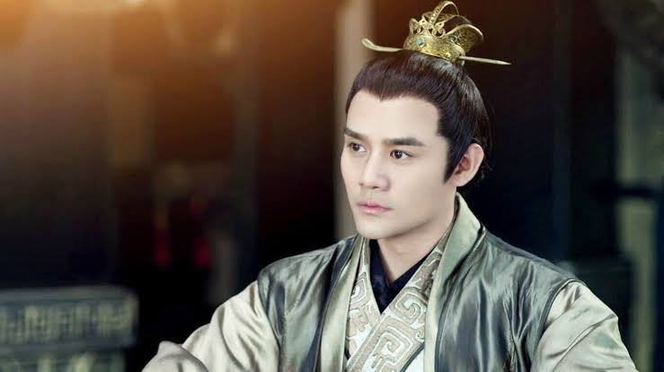

靖王
蕭景琰 · 大梁皇七子
大梁皇七子，常年在外領兵。初登場時因庭生之事來到寧國侯府，經蕭景睿引見，與蘇哲相識。

人物概述與初登場身分
靖王蕭景琰是大梁皇七子，初登場時三十一歲，常年在外領兵。原文寫他身形挺拔，因軍旅生涯而多了幾分剛毅之氣，臉與手的皮膚也不像其他皇子那樣嬌嫩。來源 J01
原文明述的性格
敘事直接形容他閱歷豐厚、聰明。初登場時，他因聽聞庭生惹禍而趕到寧國侯府，發現只是誤會後，承認擅闖侯府是自己魯莽，表示改日致歉。來源 J02
初登場人物關係
他與蕭景睿相識，由景睿引見蘇哲。他也已照看庭生多年，出錢讓他買書，並運用自己的權力使他不再挨打；此時庭生仍住在掖幽庭，並非靖王府中人。來源 J02
文本依據
以下為介紹內容的核對位置，使用原始章名與段落編號。
- J01第四章〈麒麟之才〉
靖王初登場的皇七子身分、年齡、形貌與軍旅背景。
C004-P0175 - J02第四章〈麒麟之才〉
初登場時與景睿、蘇哲及庭生的往來，敘事明述的聰明與閱歷，以及照看庭生和致歉的行動；不揭露庭生身世。
C004-P0167、C004-P0170、C004-P0171、C004-P0172、C004-P0173、C004-P0174、C004-P0178、C004-P0185、C004-P0188、C004-P0189、C004-P0203
以下包含完整身分與結局，點此展開劇透版
故交與庭生的身世
靖王與赤焰少帥林殊是知交好友。他初登場時照看的庭生，則是他最敬重的皇長兄留下的兒子；讓庭生離開掖幽庭，是他一直未能完成的心願。來源 J03 來源 J07
接受梅長蘇輔助
梅長蘇提出選擇輔助他時，靖王自言生母位低、自己尚未封親王，也缺少朝中人脈。他對梅長蘇的算計並不喜歡，但最終同意配合，阻止太子與譽王取得帝位。來源 J03
之後，他奉命與沈追辦理賑災，接納梅長蘇所提建議，與沈追商議後上奏。奏議實施後，敘事明述災民得益、災區局面穩定，靖王的治政能力也逐漸獲得認可。年底太子被廢，他同時增加兩顆王珠，與譽王同為七珠親王。來源 J04
救駕、冊立與監國
譽王叛亂危及九安山獵宮時，靖王奉旨調動紀城軍回援。平叛後，他立即繳還兵符，並協助處理傷亡與善後。梁帝詢問他想要何種封賞，他先請賞賜將士。六月十六，蕭景琰正式受冊為太子；翌日梁帝因病免朝，政事先入東宮，由太子監國。來源 J05 來源 J06
得知故人身分與重審舊案
成為太子後，他得知梅長蘇就是林殊，卻沒有到蘇宅當面追問，而是返回東宮，向蒙摯與母親詢問。母親說明林殊容貌改變與火寒毒有關後，他表示以後的事由自己來做，讓好友專心治病，也希望早日讓林殊看到汙名洗雪。來源 J07
壽宴上，蒞陽長公主供出謝玉與夏江陷害赤焰軍的經過，景琰與群臣一同請求重審。梁帝允准後，紀王、言闕與葉士禎受命主審。景琰接走聶鋒、聶鐸與衛崢，安排人證及恢復身分的事宜；十月初四，他率主審官入宮，兩日後正式頒下昭雪旨意。來源 J08 來源 J09
尾聲的哀悼與登基
北境戰事告捷後，他在東宮親抄亡者名冊，寫到最後一個名字時伏案痛哭。元佑七年秋，太子妃產子，三日後梁帝駕崩。景琰守滿一月孝期後正式登基，奉生母靜貴妃為太后，立柳氏為后；庭生也被他收為義子，安排師長教導。來源 J10
劇透版文本依據
以下為介紹內容的核對位置，使用原始章名與段落編號。
- J03第四章〈麒麟之才〉
梅長蘇選擇輔助靖王、靖王自述的不利條件與合作答覆，以及庭生是皇長兄之子的揭露。
C004-P0235、C004-P0236、C004-P0237、C004-P0243、C004-P0244、C004-P0247、C004-P0252、C004-P0253 - J04第四十三章〈山雨欲來〉
靖王與沈追賑災、參酌梅長蘇建議及施行結果；年底增加王珠，成為七珠親王。
C043-P0004、C043-P0005、C043-P0006、C043-P0007、C043-P0008 - J05第五十六章〈劫後餘生〉
九安山回援平叛、繳還兵符與善後，以及靖王請先賞賜將士。
C056-P0007、C056-P0008、C056-P0010、C056-P0011、C056-P0013、C056-P0016、C056-P0019、C056-P0020、C056-P0025、C056-P0026、C056-P0038、C056-P0039、C056-P0040 - J06第六十章〈火寒奇毒〉
六月十六正式冊立太子，翌日因梁帝病休而由太子監國。
C060-P0082、C060-P0083、C060-P0085、C060-P0086 - J07第六十一章〈莫逆相知〉
林殊與靖王的知交關係；景琰得知身分後返回東宮、向蒙摯及母親詢問，並表明讓林殊休養與洗雪汙名的打算。
C061-P0004、C061-P0007、C061-P0008、C061-P0009、C061-P0012、C061-P0017、C061-P0019、C061-P0020、C061-P0021、C061-P0038、C061-P0042、C061-P0043、C061-P0044、C061-P0051、C061-P0054、C061-P0058 - J08第六十七章〈金階狂瀾〉
蒞陽長公主代夫供罪，太子與群臣請求重審赤焰案。
C067-P0078、C067-P0080、C067-P0082、C067-P0085、C067-P0086、C067-P0087、C067-P0092、C067-P0093、C067-P0094 - J09第六十八章〈血色清白〉
允准重審與主審人選、太子安排人證，以及率主審官面君後正式下旨昭雪。
C068-P0013、C068-P0014、C068-P0015、C068-P0017、C068-P0018、C068-P0019、C068-P0020、C068-P0095、C068-P0096、C068-P0097、C068-P0098 - J10尾聲〈風起〉
戰後抄寫亡者名冊；元佑七年秋梁帝駕崩，景琰守孝後登基，尊母立后並收庭生為義子。
C070-P0001、C070-P0002、C070-P0003、C070-P0005、C070-P0006